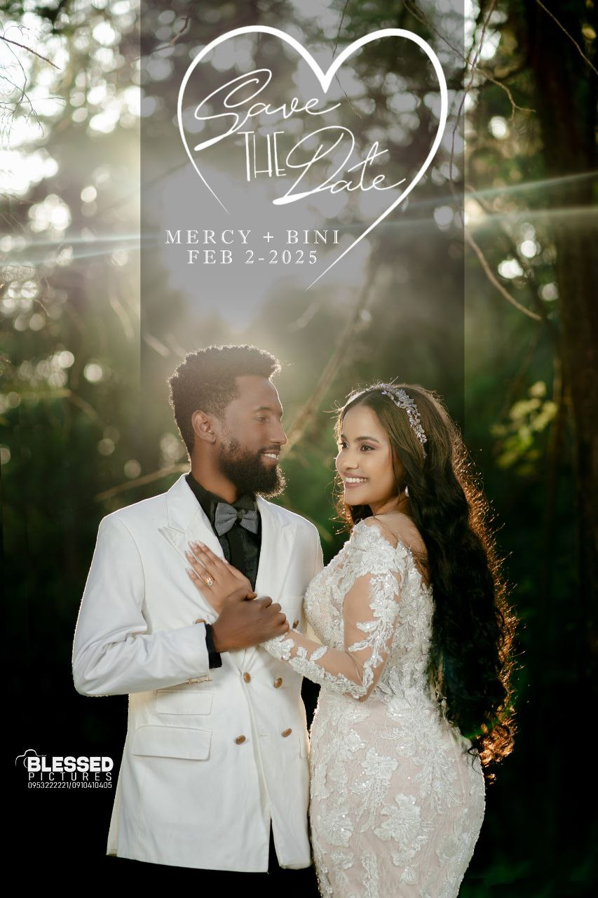
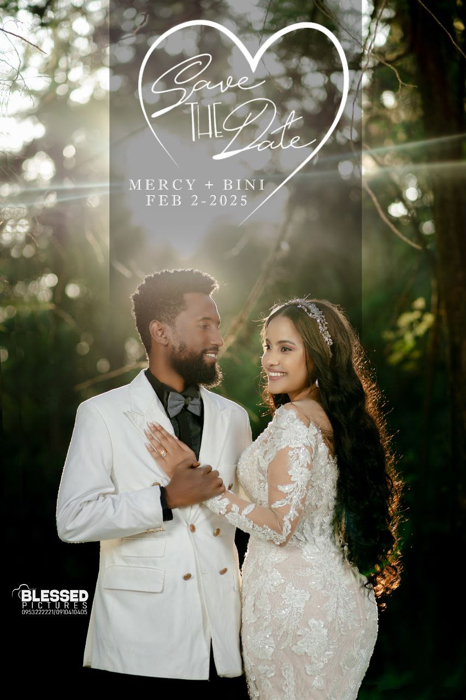

The Marriage Ministry of Genet CMC Local Church is dedicated to strengthening families and helping couples build Christ-centered relationships. Through teachings, counseling, and fellowship, we guide couples to grow in love, faith, and unity.
Our Mission
To equip couples with biblical principles for a strong and joyful marriage, fostering love, respect, and spiritual harmony between husband and wife.
Our Activities
- Marriage enrichment seminars and retreats
- Pre-marital and marital counseling sessions
- Family fellowship and prayer gatherings
- Workshops on communication and conflict resolution
Marriage Ministry in Pictures
 
